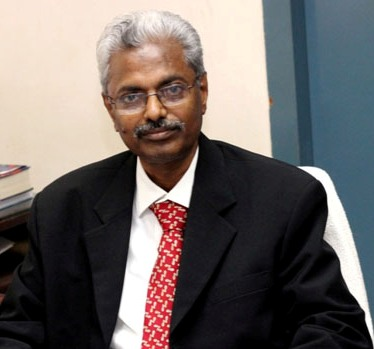

|

Prof.S.Kuppuswami B.E./M.Sc. (Engg.)/Dr.Ing (France)
Principal & Patron I2C2SW’18
Kongu Engineering College
|
A reliable, economically competitive and environmentally sustainable smart technology is the cornerstone of a modern society. The Industry 4.0 builds on the digital revolution and combines multiple technologies that are leading to unprecedented paradigm shifts in the economy, business, society, and for individuals. This Industry 4.0 fosters a "Smart World".
Within modular structured smart factories, cyber-physical systems monitor physical processes, create a virtual copy of the physical world and make decentralized decisions. Over the Internet of Things, cyber-physical systems communicate and cooperate with each other and with humans in real-time both internally and across organizational services offered and used by participants of the value chain. It involves the transformation of entire systems.
There are challenges in the implementation of Industry 4.0 like IT security issues, Lack of adequate skill-sets, need to maintain the integrity of production processes. Through this International conference on Intelligent Computing and Communication for Smart World (I2C2SW-18),a foundation has been laid to discuss on the challenges and current trends prevailing in the communication field.
The two day conference addresses all the emerging technology areas like Intelligent and High Performance Computing Technologies, Intelligent Control Techniques and Applications, Intelligent Image Processing and Computing, Intelligent Information Systems, Nature Inspired Computing and Optimization, Artificial Neural Networks and Neuro-fuzzy Control, Robotics in Automation and Control, Virtual Reality and Human-Computer Interaction, Smart Sensor Networking, Green Technologies in Information Computing and Communication Systems, Mixed Signal Microelectronic Applications, Intelligent Internet of Things(IOT).
Experts in India and abroad really accepted our request and were enthusiastic to participate in the conference. Their contribution is gratefully acknowledged. The organizing committee supported by the faculty of school of communication and computer sciences has worked ceaselessly as a team with regard to the macro and micro level planning and successfully implemented them. They all deserve appreciation. The proceedings of the conference are recorded and brought out so as to bring as a reference for catalyzing further research efforts.
We are confident that the outcome of the conference will go a long way in catapulting the research and development in the emerging technology areas.
|